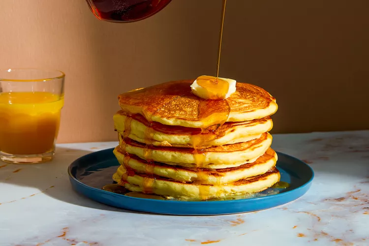
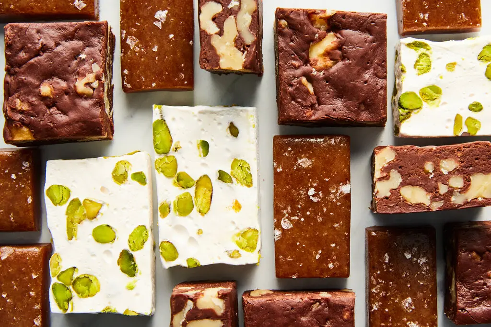
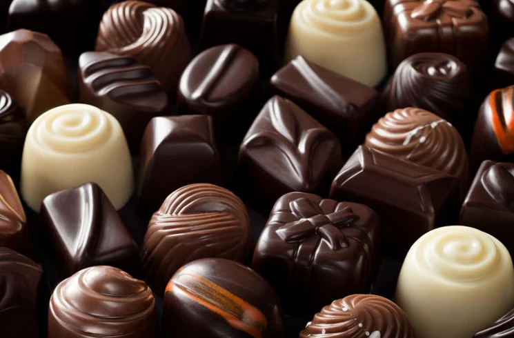

Eikendal
Have a unique cheesecake and wine pairing.
Uitkyk
Have an exciting pancake and wine tasting, includes 5 different pancakes (Thai green curry, roasted butternut and chocolate ganache and berry pancakes).
Avontuur
Fudge and nougat tasting, enjoy a sweet treat with your wine.
Waterford
Enjoy more sweetness with a chocolate and wine pairing at the beautiful wine farm of Waterford.
Somerbosch
Enjoy an ice cream pairing on a hot summer's day, in the beautiful gardens of Somerbosch.